Course Path
This page brings together the slides for the Radio Amateur License Test Candidates course in one digital experience. The slide text has been preserved as provided, with each slide shown as a separate visual that can be reviewed and searched.
Course For Radio Amateur License Test Candidates 2024
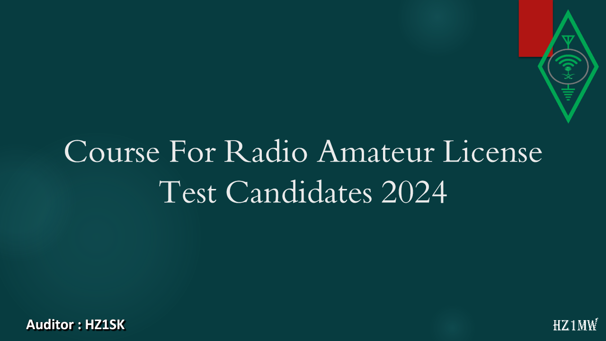
Slide Text
Auditor : HZ1SK
Definitions And Terms
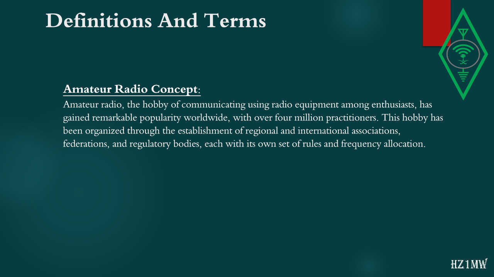
Slide Text
Amateur Radio Concept:
Amateur radio, the hobby of communicating using radio equipment among enthusiasts, has gained remarkable popularity worldwide, with over four million practitioners. This hobby has been organized through the establishment of regional and international associations, federations, and regulatory bodies, each with its own set of rules and frequency allocation.
Definitions And Terms
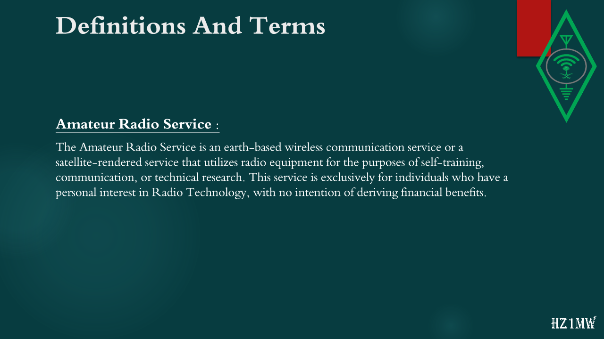
Slide Text
Amateur Radio Service :
The Amateur Radio Service is an earth-based wireless communication service or a satellite-rendered service that utilizes radio equipment for the purposes of self-training, communication, or technical research. This service is exclusively for individuals who have a personal interest in Radio Technology, with no intention of deriving financial benefits.
Definitions And Terms
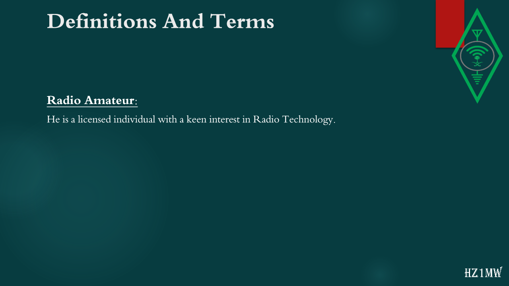
Slide Text
Radio Amateur:
He is a licensed individual with a keen interest in Radio Technology.
Definitions And Terms
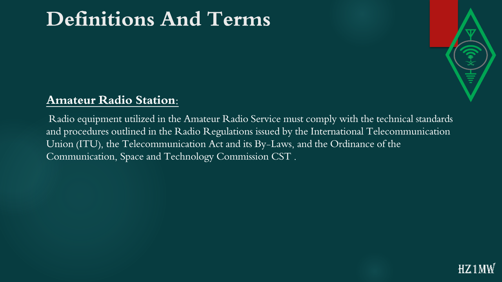
Slide Text
Amateur Radio Station:
Radio equipment utilized in the Amateur Radio Service must comply with the technical standards and procedures outlined in the Radio Regulations issued by the International Telecommunication Union (ITU), the Telecommunication Act and its By-Laws, and the Ordinance of the Communication, Space and Technology Commission CST .
Definitions And Terms
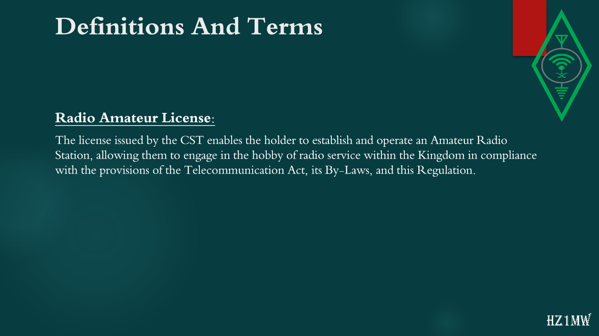
Slide Text
Radio Amateur License:
The license issued by
the CST
enables the holder to establish and operate an Amateur Radio Station, allowing them to engage in the hobby of radio service within the Kingdom in compliance with the provisions of the Telecommunication Act, its By-Laws, and this Regulation.
Definitions And Terms
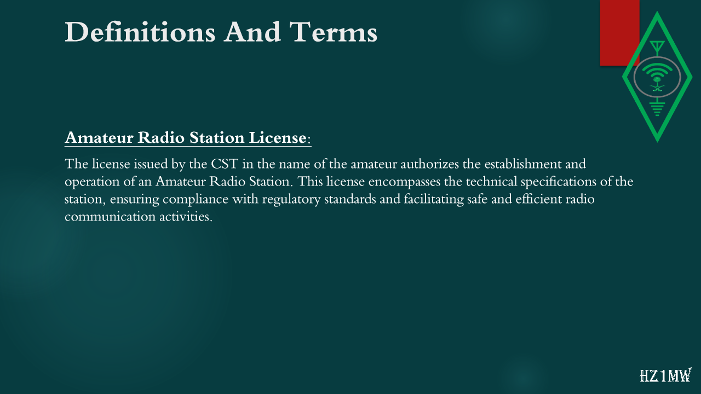
Slide Text
Amateur Radio Station License:
The license issued by the CST in the name of the amateur authorizes the establishment and operation of an Amateur Radio Station. This license encompasses the technical specifications of the station, ensuring compliance with regulatory standards and facilitating safe and efficient radio communication activities.
Licenses In The Kingdom Of Saudi Arabia And Their Categories
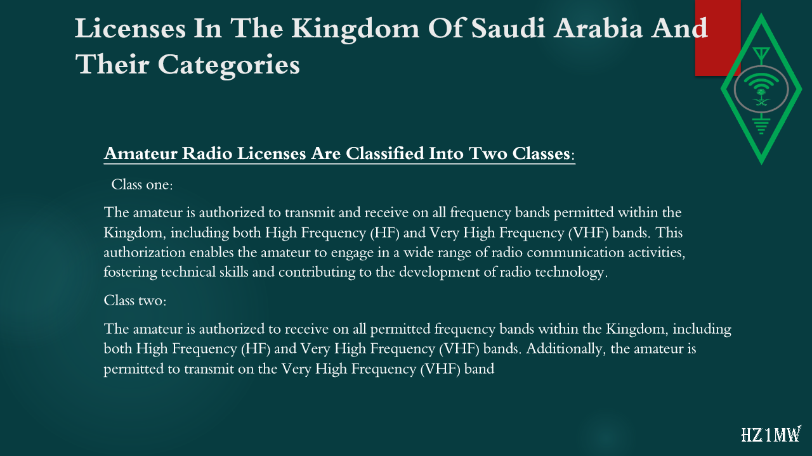
Slide Text
Amateur Radio Licenses Are Classified Into Two Classes:
Class one:
The amateur is authorized to transmit and receive on all frequency bands permitted within the Kingdom, including both High Frequency (HF) and Very High Frequency (VHF) bands. This authorization enables the amateur to engage in a wide range of radio communication activities, fostering technical skills and contributing to the development of radio technology.
Class two:
The amateur is authorized to receive on all permitted frequency bands within the Kingdom, including both High Frequency (HF) and Very High Frequency (VHF) bands. Additionally, the amateur is permitted to transmit on the Very High Frequency (VHF) band
Conditions for obtaining an Amateur Radio license in the Kingdom of Saudi Arabia
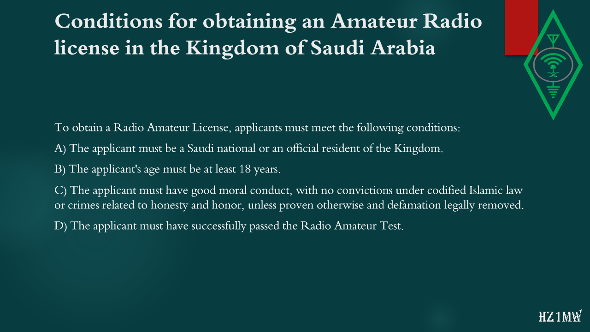
Slide Text
To obtain a Radio Amateur License, applicants must meet the following conditions:
A) The applicant must be a Saudi national or an official resident of the Kingdom.
B) The applicant's age must be at least 18 years.
C) The applicant must have good moral conduct, with no convictions under codified Islamic law or crimes related to honesty and honor, unless proven otherwise and defamation legally removed.
D) The applicant must have successfully passed the Radio Amateur Test.
Callsign
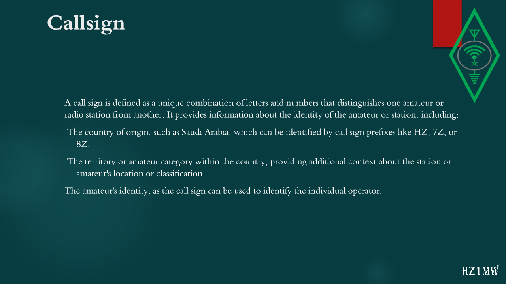
Slide Text
A call sign is defined as a unique combination of letters and numbers that distinguishes one amateur or radio station from another. It provides information about the identity of the amateur or station, including:
The country of origin, such as Saudi Arabia, which can be identified by call sign prefixes like HZ, 7Z, or 8Z.
The territory or amateur category within the country, providing additional context about the station or amateur's location or classification.
The amateur's identity, as the call sign can be used to identify the individual operator.
Callsign
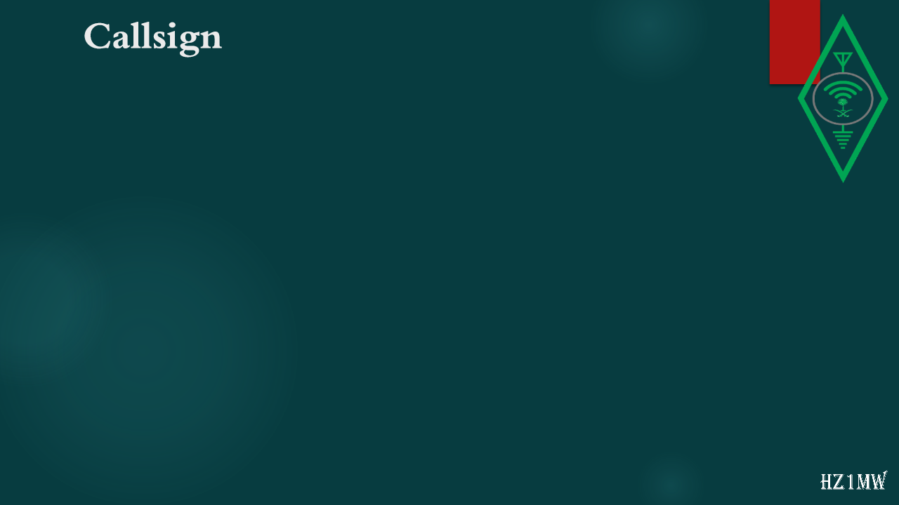
Slide Text
Callsign
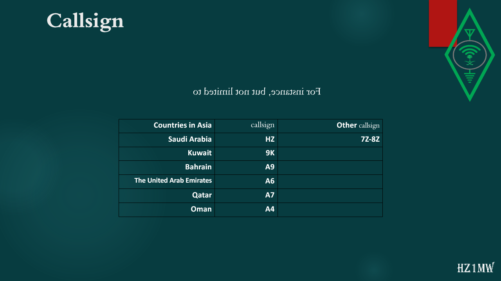
Slide Text
Countries in Asia
callsign
Other
callsign
Saudi Arabia
HZ
7Z-8Z
Kuwait
9
K
Bahrain
A9
The United Arab Emirates
A6
Qatar
A7
Oman
A4
For instance, but not limited to
Callsign
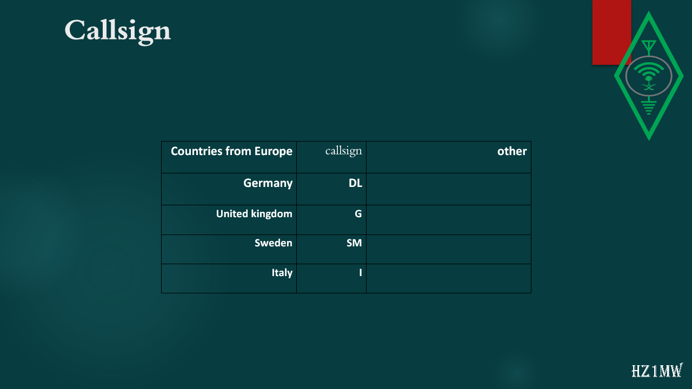
Slide Text
Countries from Europe
callsign
other
Germany
DL
United kingdom
G
Sweden
SM
Italy
I
Callsign
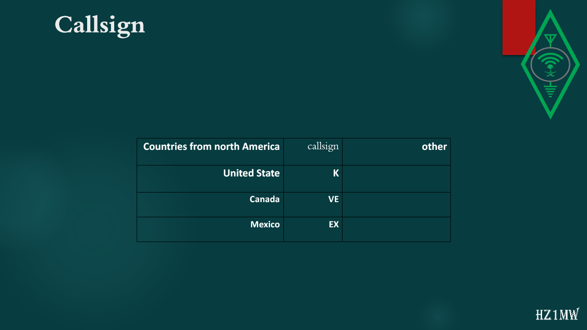
Slide Text
Countries from north America
callsign
other
United State
K
Canada
VE
Mexico
EX
Callsign
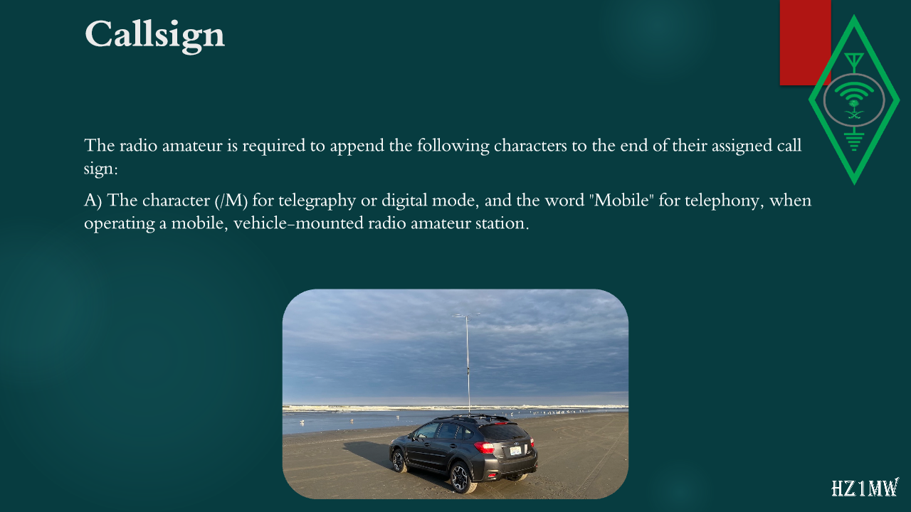
Slide Text
The radio amateur is required to append the following characters to the end of their assigned call sign:
A) The character (/M) for telegraphy or digital mode, and the word "Mobile" for telephony, when operating a mobile, vehicle-mounted radio amateur station.
Callsign
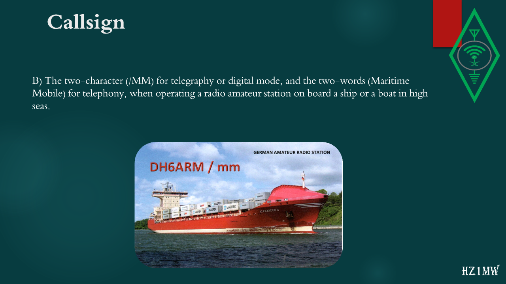
Slide Text
B) The two-character (/MM) for telegraphy or digital mode, and the two-words (Maritime Mobile) for telephony, when operating a radio amateur station on board a ship or a boat in high seas.
callsign
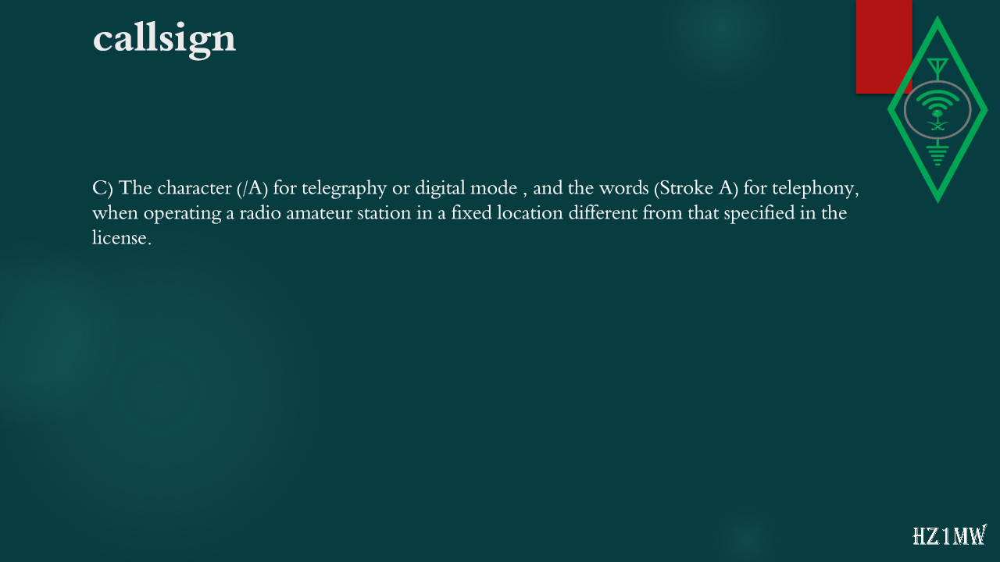
Slide Text
C) The character (/A) for telegraphy or digital mode , and the words (Stroke A) for telephony, when operating a radio amateur station in a fixed location different from that specified in the license.
Callsign
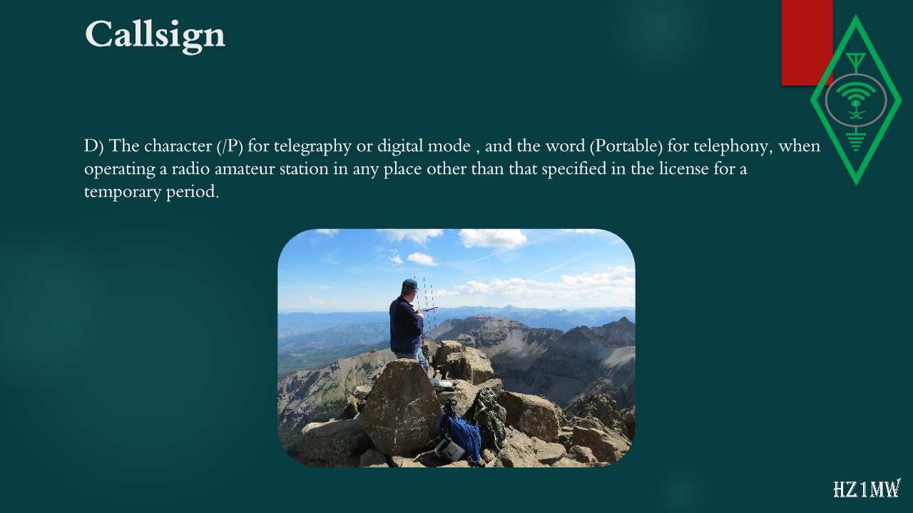
Slide Text
D) The character (/P) for telegraphy or digital mode , and the word (Portable) for telephony, when operating a radio amateur station in any place other than that specified in the license for a temporary period.
Division of the International Federation of Radio Amateurs
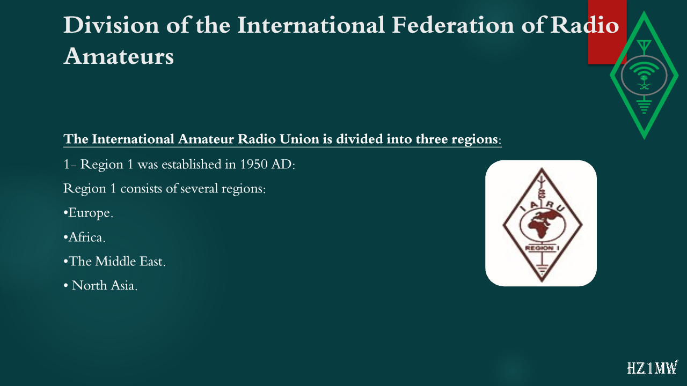
Slide Text
The International Amateur Radio Union is divided into three regions:
1- Region 1 was established in 1950 AD:
Region 1 consists of several regions:
•Europe.
•Africa.
•The Middle East.
• North Asia.
Division of the International Federation of Radio Amateurs
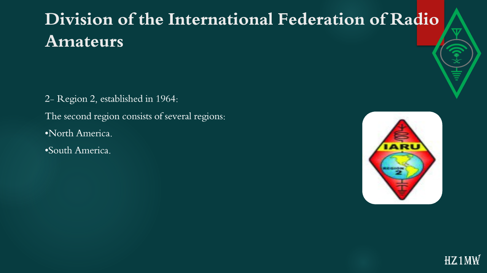
Slide Text
2- Region 2, established in 1964:
The second region consists of several regions:
•North America.
•South America.
Division of the International Federation of Radio Amateurs
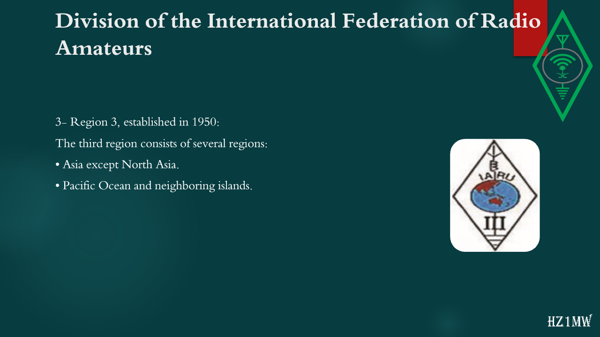
Slide Text
3- Region 3, established in 1950:
The third region consists of several regions:
• Asia except North Asia.
• Pacific Ocean and neighboring islands.
Division of the International Federation of Radio Amateurs
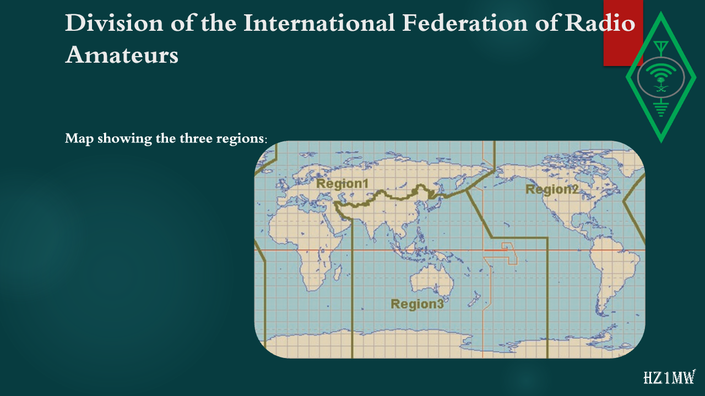
Slide Text
Map showing the three regions:
Division of the International Federation of Radio Amateurs
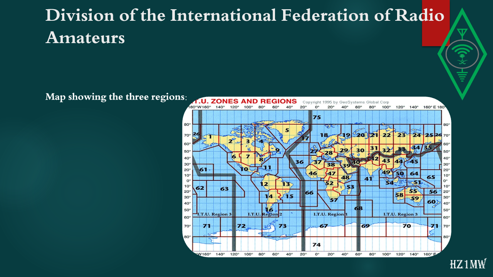
Slide Text
Map showing the three regions:
Ethics and basics
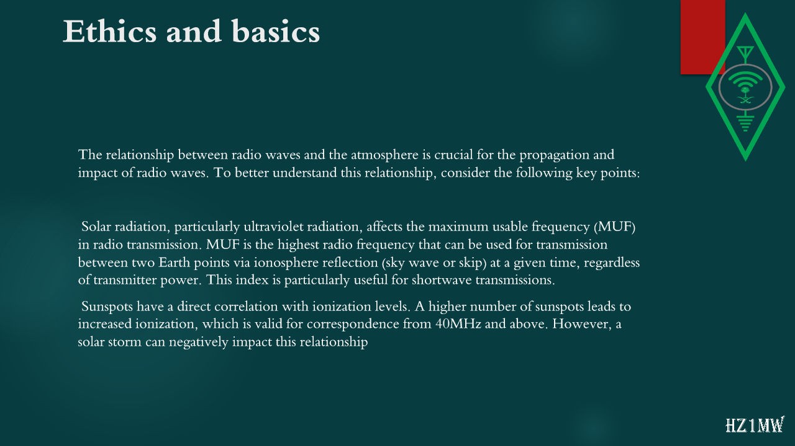
Slide Text
The relationship between radio waves and the atmosphere is crucial for the propagation and impact of radio waves. To better understand this relationship, consider the following key points:
Solar radiation, particularly ultraviolet radiation, affects the maximum usable frequency (MUF) in radio transmission. MUF is the highest radio frequency that can be used for transmission between two Earth points via ionosphere reflection (sky wave or skip) at a given time, regardless of transmitter power. This index is particularly useful for shortwave transmissions.
Sunspots have a direct correlation with ionization levels. A higher number of sunspots leads to increased ionization, which is valid for correspondence from 40MHz and above. However, a solar storm can negatively impact this relationship
Atmosphere and its relationship to amateur radio
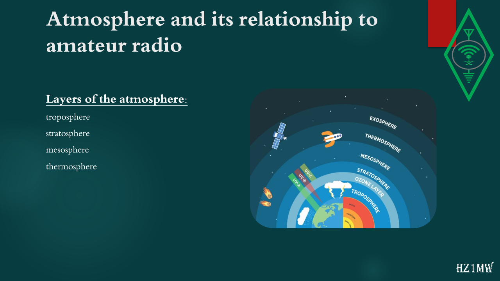
Slide Text
Layers of the atmosphere:
troposphere
stratosphere
mesosphere
thermosphere
Atmosphere and its relationship to amateur radio
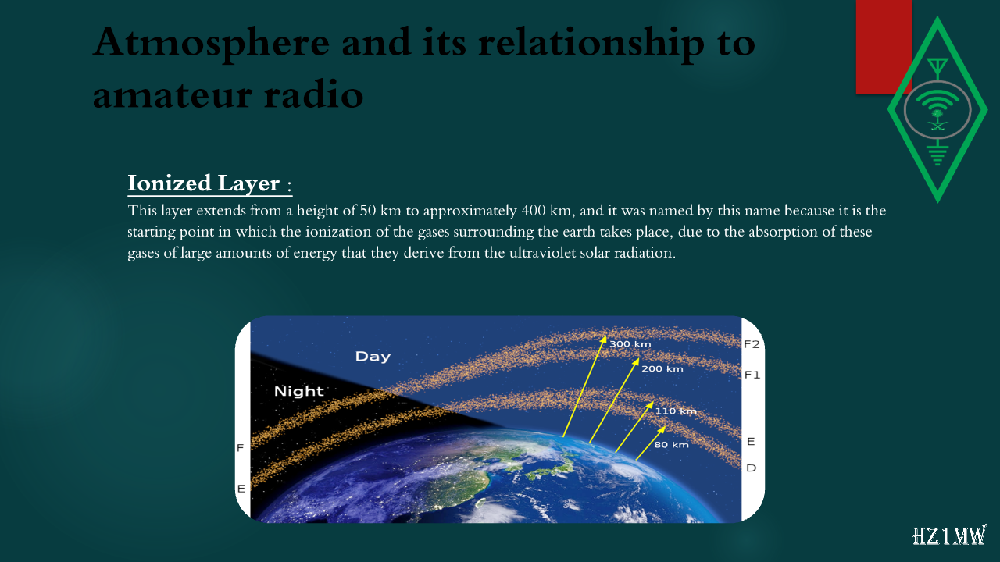
Slide Text
Ionized Layer
:
This layer extends from a height of 50 km to approximately 400 km, and it was named by this name because it is the starting point in which the ionization of the gases surrounding the earth takes place, due to the absorption of these gases of large amounts of energy that they derive from the ultraviolet solar radiation.
Atmosphere and its relationship to amateur radio
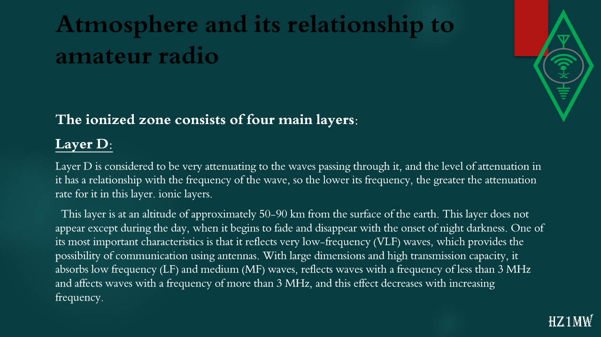
Slide Text
The ionized zone consists of four main layers:
Layer D:
Layer D is considered to be very attenuating to the waves passing through it, and the level of attenuation in it has a relationship with the frequency of the wave, so the lower its frequency, the greater the attenuation rate for it in this layer. ionic layers.
This layer is at an altitude of approximately 50-90 km from the surface of the earth. This layer does not appear except during the day, when it begins to fade and disappear with the onset of night darkness. One of its most important characteristics is that it reflects very low-frequency (VLF) waves, which provides the possibility of communication using antennas. With large dimensions and high transmission capacity, it absorbs low frequency (LF) and medium (MF) waves, reflects waves with a frequency of less than 3 MHz and affects waves with a frequency of more than 3 MHz, and this effect decreases with increasing frequency.
Atmosphere and its relationship to amateur radio
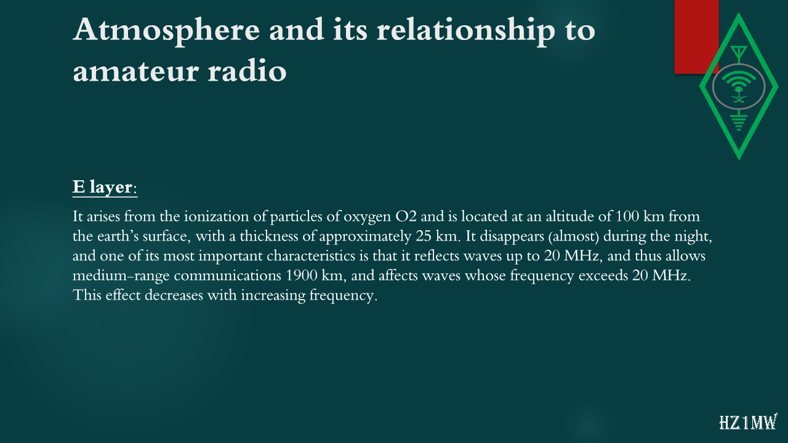
Slide Text
E layer:
It arises from the ionization of particles of oxygen O2 and is located at an altitude of 100 km from the earth’s surface, with a thickness of approximately 25 km. It disappears (almost) during the night, and one of its most important characteristics is that it reflects waves up to 20 MHz, and thus allows medium-range communications 1900 km, and affects waves whose frequency exceeds 20
MHz.
This effect decreases with increasing frequency.
Atmosphere and its relationship to amateur radio
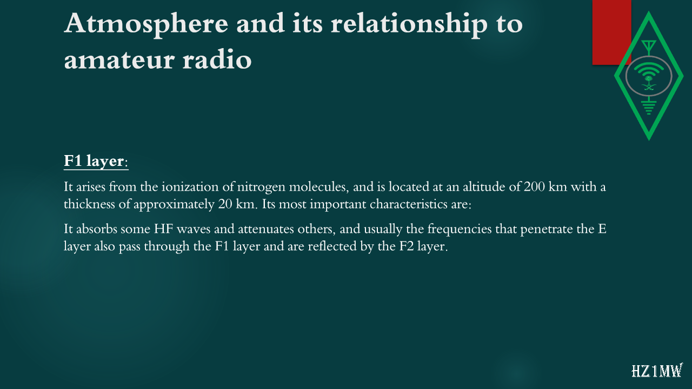
Slide Text
F1 layer:
It arises from the ionization of nitrogen molecules, and is located at an altitude of 200 km with a thickness of approximately 20 km. Its most important characteristics are:
It absorbs some HF waves and attenuates others, and usually the frequencies that penetrate the E layer also pass through the F1 layer and are reflected by the F2 layer.
Atmosphere and its relationship to amateur radio
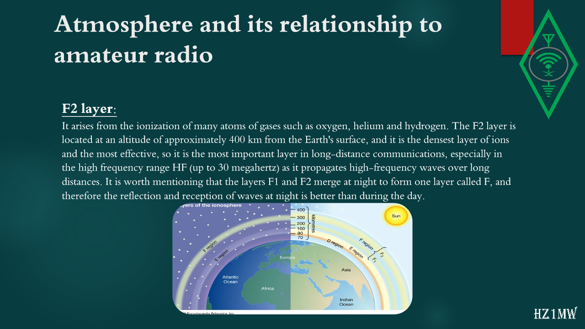
Slide Text
F2 layer:
It arises from the ionization of many atoms of gases such as oxygen, helium and hydrogen. The F2 layer is located at an altitude of approximately 400 km from the Earth's surface, and it is the densest layer of ions and the most effective, so it is the most important layer in long-distance communications, especially in the high frequency range HF (up to 30 megahertz) as it propagates high-frequency waves over long distances. It is worth mentioning that the layers F1 and F2 merge at night to form one layer called F, and therefore the reflection and reception of waves at night is better than during the day.
Atmosphere and its relationship to amateur radio
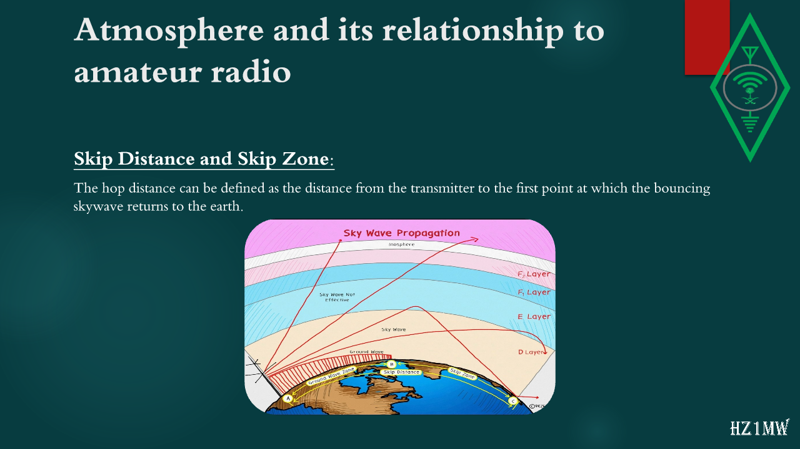
Slide Text
Skip Distance and Skip Zone:
The hop distance can be defined as the distance from the transmitter to the first point at which the bouncing skywave returns to the earth.
Atmosphere and its relationship to amateur radio
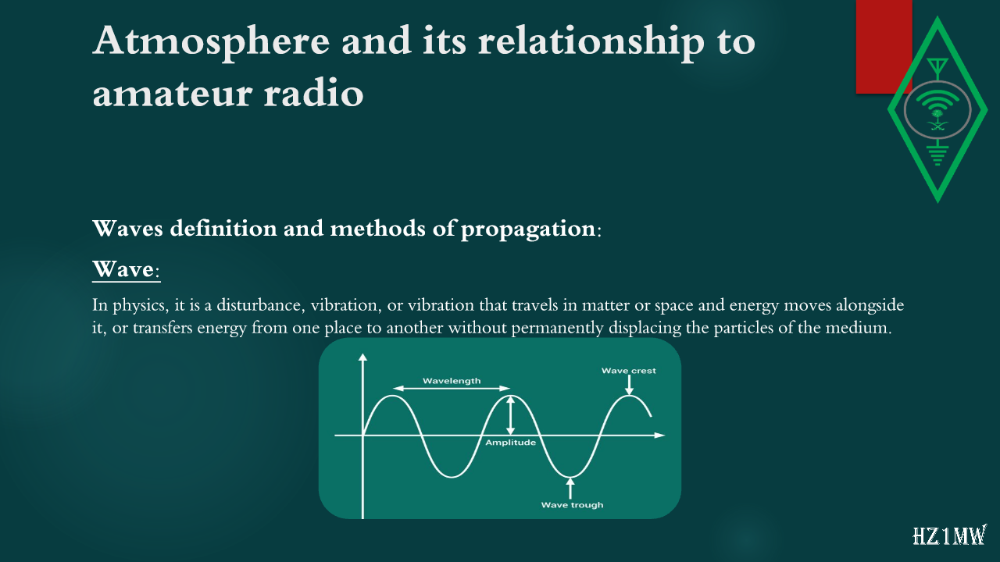
Slide Text
Waves definition and methods of propagation:
Wave:
In physics, it is a disturbance, vibration, or vibration that travels in matter or space and energy moves alongside it, or transfers energy from one place to another without permanently displacing the particles of the medium.
Atmosphere and its relationship to amateur radio
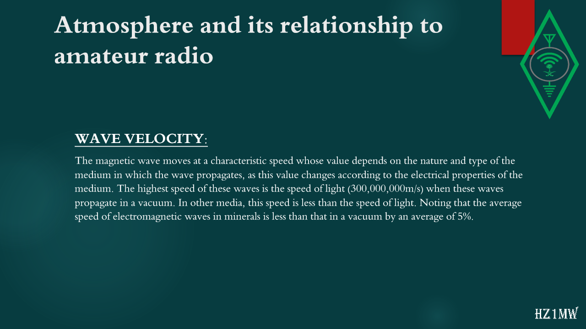
Slide Text
WAVE VELOCITY
:
The magnetic wave moves at a characteristic speed whose value depends on the nature and type of the medium in which the wave propagates, as this value changes according to the electrical properties of the medium. The highest speed of these waves is the speed of light (300,000,000m/s) when these waves propagate in a vacuum. In other media, this speed is less than the speed of light. Noting that the average speed of electromagnetic waves in minerals is less than that in a vacuum by an average of 5%.
Atmosphere and its relationship to amateur radio
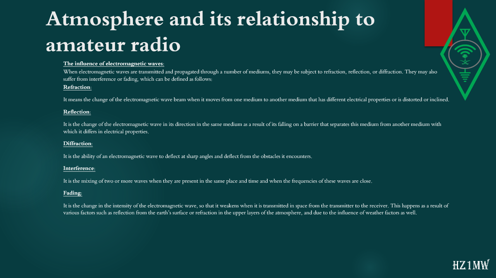
Slide Text
The influence of electromagnetic waves:
When electromagnetic waves are transmitted and propagated through a number of mediums, they may be subject to refraction, reflection, or diffraction. They may also suffer from interference or fading, which can be defined as follows:
Refraction:
It means the change of the electromagnetic wave beam when it moves from one medium to another medium that has different electrical properties or is distorted or inclined.
Reflection:
It is the change of the electromagnetic wave in its direction in the same medium as a result of its falling on a barrier that separates this medium from another medium with which it differs in electrical properties.
Diffraction:
It is the ability of an electromagnetic wave to deflect at sharp angles and deflect from the obstacles it encounters.
Interference:
It is the mixing of two or more waves when they are present in the same place and time and when the frequencies of these waves are close.
Fading:
It is the change in the intensity of the electromagnetic wave, so that it weakens when it is transmitted in space from the transmitter to the receiver. This happens as a result of various factors such as reflection from the earth’s surface or refraction in the upper layers of the atmosphere, and due to the influence of weather factors as well.
Bands and frequencies allowed to operate in the Kingdom of Saudi Arabia
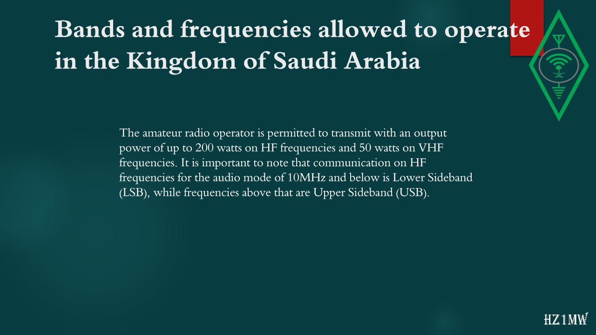
Slide Text
The amateur radio operator is permitted to transmit with an output power of up to 200 watts on HF frequencies and 50 watts on VHF frequencies. It is important to note that communication on HF frequencies for the audio mode of 10MHz and below is Lower Sideband (LSB), while frequencies above that are Upper Sideband (USB).
Bands and frequencies allowed to operate in the Kingdom of Saudi Arabia
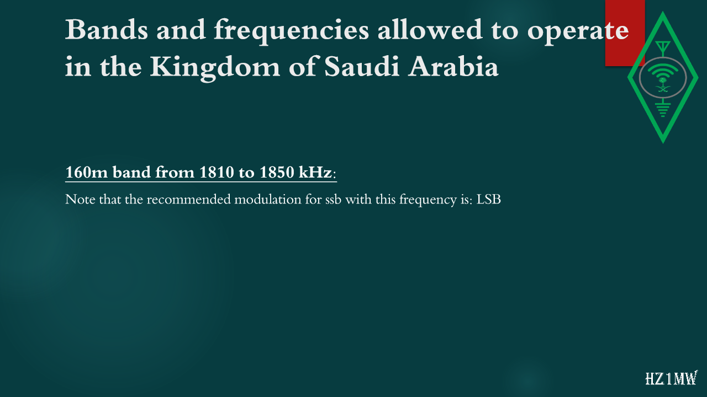
Slide Text
160m band from 1810 to 1850 kHz:
Note that the recommended modulation for ssb with this frequency is: LSB
Bands and frequencies allowed to operate in the Kingdom of Saudi Arabia
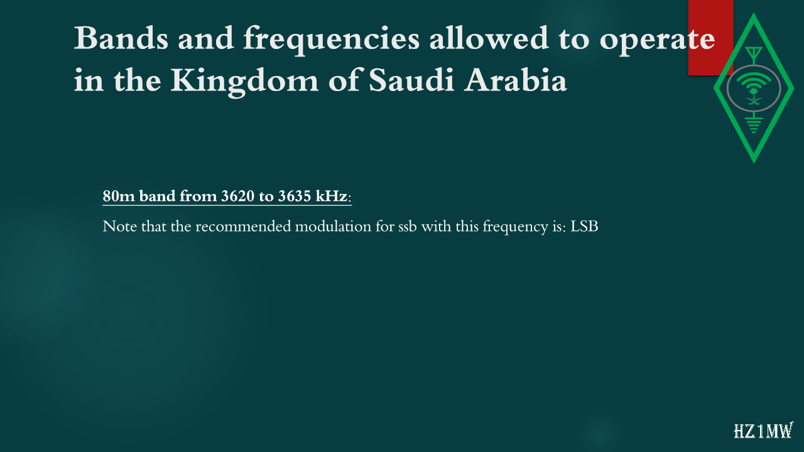
Slide Text
80m band from 3620 to 3635 kHz:
Note that the recommended modulation for ssb with this frequency is: LSB
Bands and frequencies allowed to operate in the Kingdom of Saudi Arabia
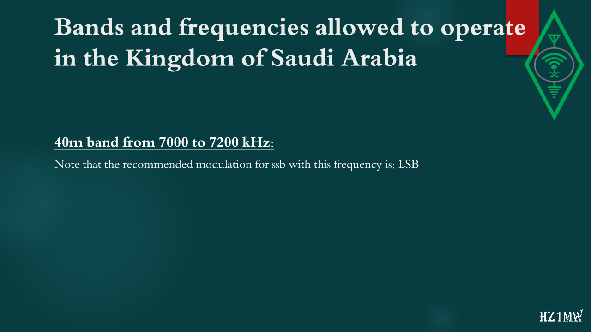
Slide Text
40m band from 7000 to 7200 kHz:
Note that the recommended modulation for ssb with this frequency is: LSB
Bands and frequencies allowed to operate in the Kingdom of Saudi Arabia
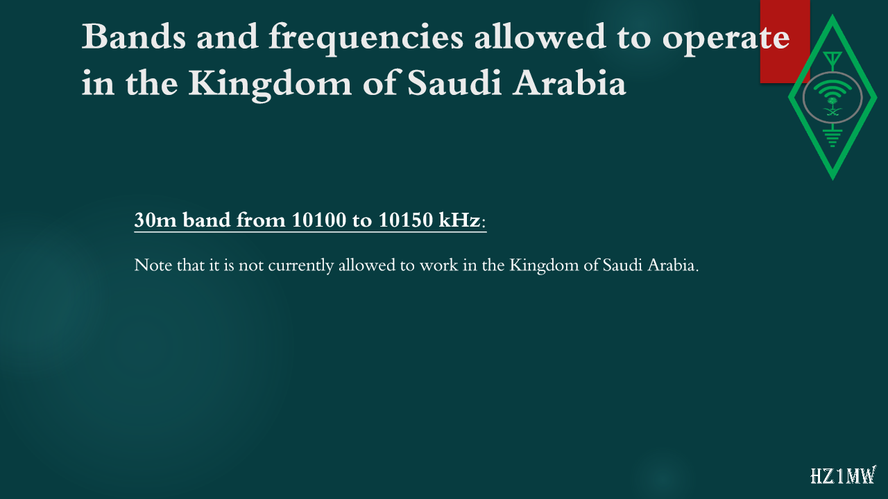
Slide Text
30m band from 10100 to 10150 kHz:
Note that it is not currently allowed to work in the Kingdom of Saudi Arabia.
Bands and frequencies allowed to operate in the Kingdom of Saudi Arabia
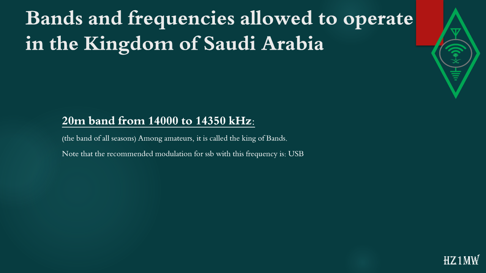
Slide Text
20m band from 14000 to 14350 kHz:
(the band of all seasons)
Among amateurs, it is called the king of Bands.
Note that the recommended modulation for ssb with this frequency is: USB
Bands and frequencies allowed to operate in the Kingdom of Saudi Arabia
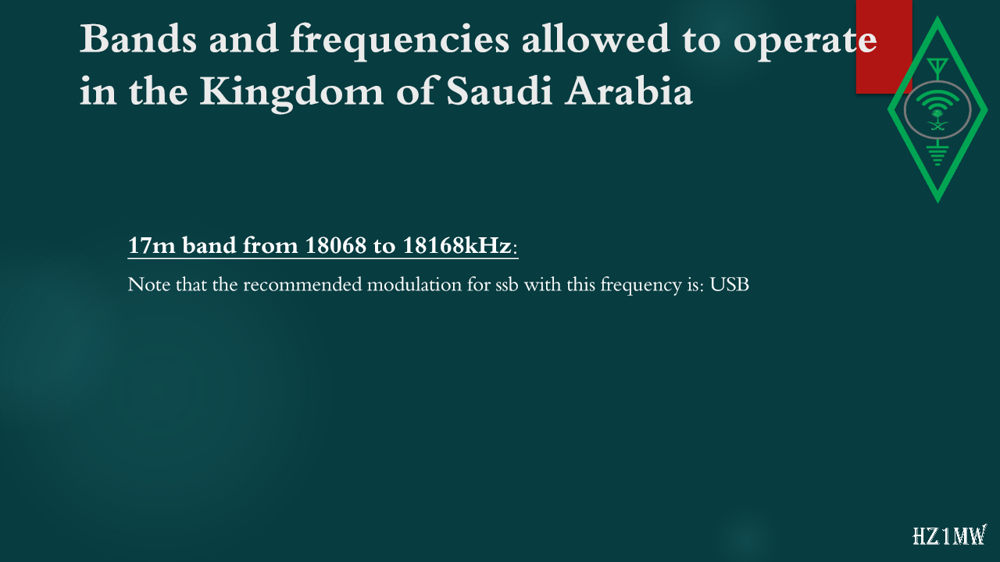
Slide Text
17m band from 18068 to 18168kHz:
Note that the recommended modulation for ssb with this frequency is: USB
Bands and frequencies allowed to operate in the Kingdom of Saudi Arabia
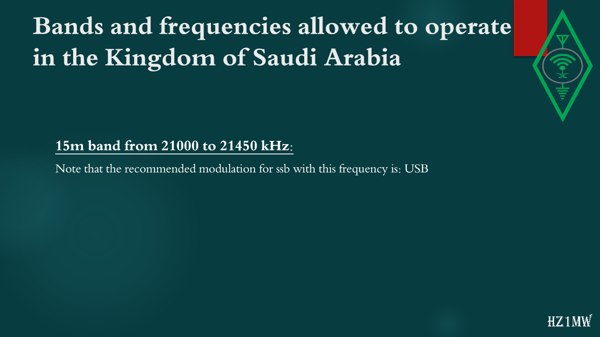
Slide Text
15m band from 21000 to 21450 kHz:
Note that the recommended modulation for ssb with this frequency is: USB
Bands and frequencies allowed to operate in the Kingdom of Saudi Arabia
Slide Text
12m band from 24890 to 24990 kHz:
Note that the recommended modulation for ssb with this frequency is: USB
Bands and frequencies allowed to operate in the Kingdom of Saudi Arabia
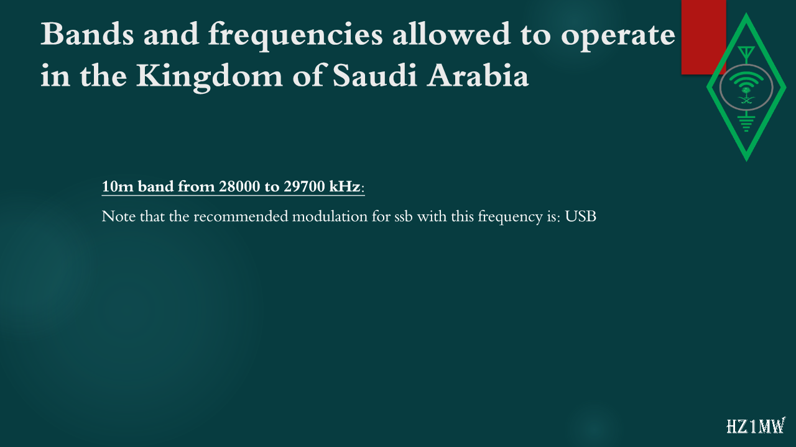
Slide Text
10m band from 28000 to 29700 kHz:
Note that the recommended modulation for ssb with this frequency is: USB
Bands and frequencies allowed to operate in the Kingdom of Saudi Arabia
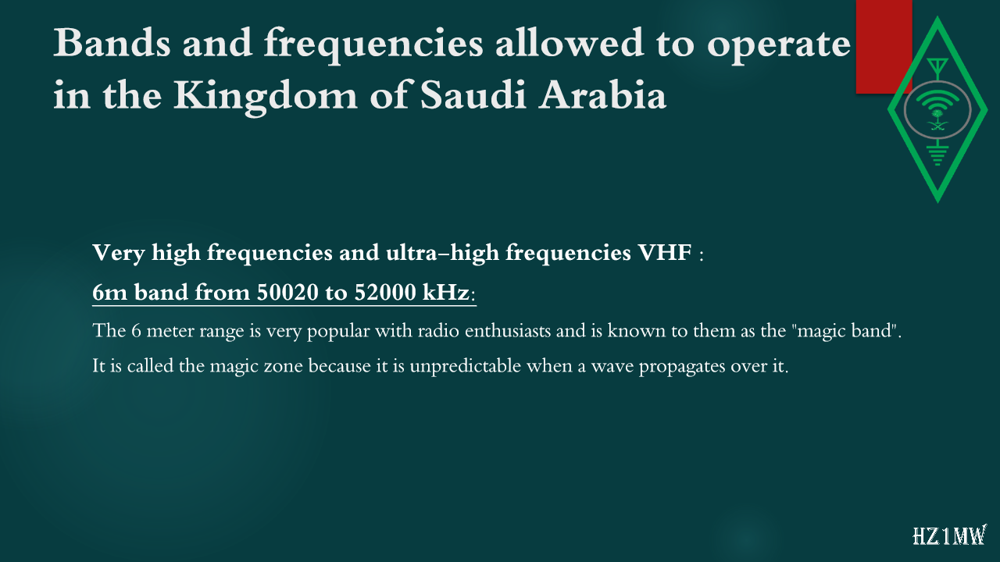
Slide Text
Very high frequencies and ultra-high frequencies VHF :
6m band from 50020 to 52000 kHz:
The 6 meter range is very popular with radio enthusiasts and is known to them as the "magic band".
It is called the magic zone because it is unpredictable when a wave propagates over it.
Bands and frequencies allowed to operate in the Kingdom of Saudi Arabia
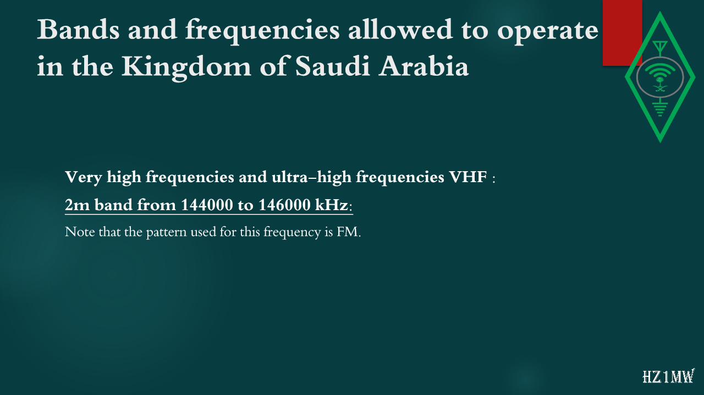
Slide Text
Very high frequencies and ultra-high frequencies VHF :
2m band from 144000 to 146000 kHz:
Note that the pattern used for this frequency is FM
.
MODES OF COMMUNICATION
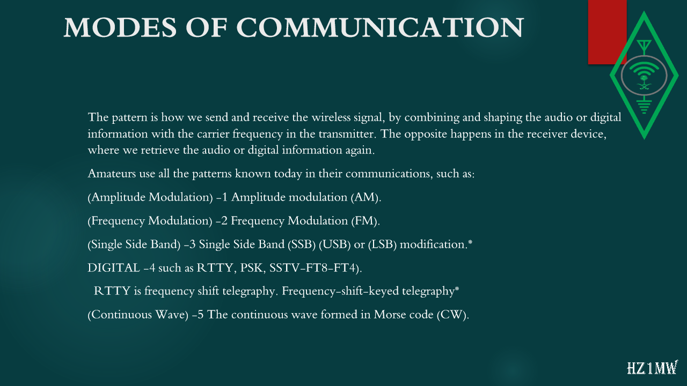
Slide Text
The pattern is how we send and receive the wireless signal, by combining and shaping the audio or digital information with the carrier frequency in the transmitter. The opposite happens in the receiver device, where we retrieve the audio or digital information again.
Amateurs use all the patterns known today in their communications, such as:
(Amplitude Modulation) -1 Amplitude modulation (AM).
(Frequency Modulation) -2 Frequency Modulation (FM).
(Single Side Band) -3 Single Side Band (SSB) (USB) or (LSB) modification.*
DIGITAL -4 such as RTTY, PSK, SSTV-FT8-FT4).
RTTY is frequency shift telegraphy. Frequency-shift-keyed telegraphy*
(Continuous Wave) -5 The continuous wave formed in Morse code (CW).
RST system
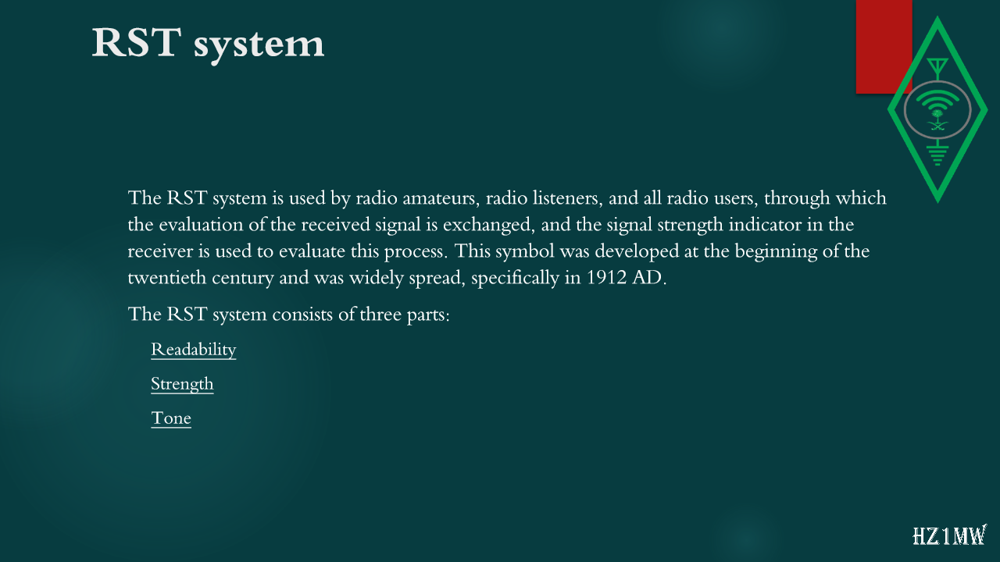
Slide Text
The RST
system
is used by radio amateurs, radio listeners, and all radio users, through which the evaluation of the received signal is exchanged, and the signal strength indicator in the receiver is used to evaluate this process. This symbol was developed at the beginning of the twentieth century and was widely spread, specifically in 1912 AD.
The RST
system
consists of three parts:
Readability
Strength
Tone
RST system
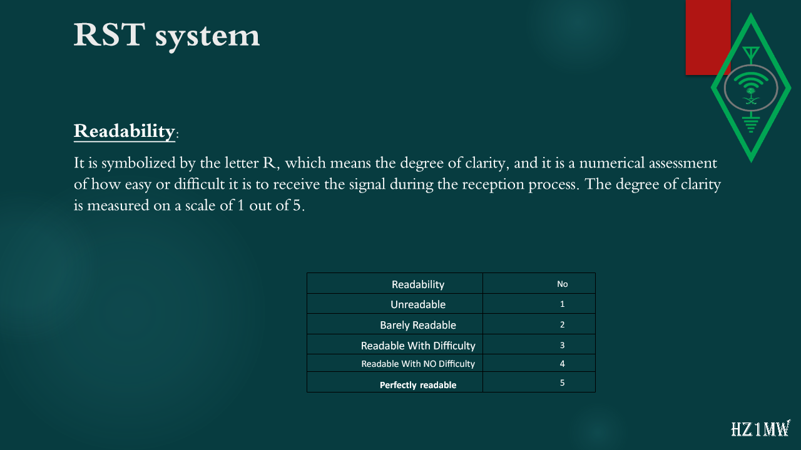
Slide Text
Readability
:
It is symbolized by the letter R, which means the degree of clarity, and it is a numerical assessment of how easy or difficult it is to receive the signal during the reception process. The degree of clarity is measured on a scale of 1 out of 5.
Readability
No
Unreadable
1
Barely Readable
2
Readable With Difficulty
3
Readable With NO Difficulty
4
Perfectly
readable
5
RST system
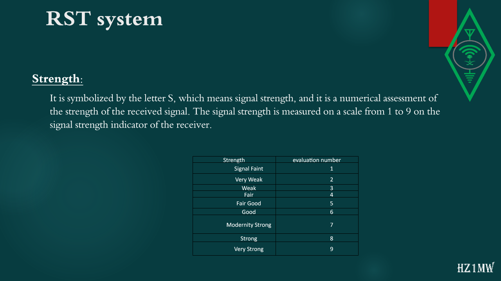
Slide Text
Strength:
It is symbolized by the letter S, which means signal strength, and it is a numerical assessment of the strength of the received signal. The signal strength is measured on a scale from 1 to 9 on the signal strength indicator of the receiver.
Strength
evaluation number
Signal Faint
1
Very Weak
2
Weak
3
Fair
4
Fair Good
5
Good
6
Modernity Strong
7
Strong
8
Very Strong
9
RST system
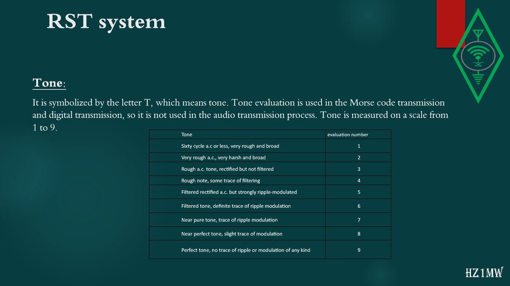
Slide Text
Tone:
It is symbolized by the letter T, which means tone. Tone evaluation is used in the Morse code transmission and digital transmission, so it is not used in the audio transmission process. Tone is measured on a scale from 1 to 9.
Tone
evaluation number
Sixty cycle
a.c
or less, very rough and broad
1
Very rough
a.c.
, very harsh and broad
2
Rough
a.c.
tone, rectified but not filtered
3
Rough note, some trace of filtering
4
Filtered rectified
a.c.
but strongly ripple-modulated
5
Filtered tone, definite trace of ripple modulation
6
Near pure tone, trace of ripple modulation
7
Near perfect tone, slight trace of modulation
8
Perfect tone, no trace of ripple or modulation of any kind
9
RST system
Slide Text
Evaluation number
Readability
Strength
Tone
1
Unreadable
Signal Faint
Sixty cycle
a.c
or less, very rough and broad
2
Barely Readable
Very Weak
Very rough
a.c.
, very harsh and broad
3
Readable With Difficulty
Weak
Rough
a.c.
tone, rectified but not filtered
4
Readable With NO Difficulty
Fair
Rough note, some trace of filtering
5
Perfectly
readable
Fair Good
Filtered rectified
a.c.
but strongly ripple-modulated
6
Good
Filtered tone, definite trace of ripple modulation
7
Modernity Strong
Near pure tone, trace of ripple modulation
8
Strong
Near perfect tone, slight trace of modulation
9
Very Strong
Perfect tone, no trace of ripple or modulation of any kind
Alphabet
Slide Text
The spoken alphabet, which replaces letters with words to denote them in radio messages, has a history dating back to 1913 when it was used by naval units, air navigation, and radio amateurs. The purpose of using the spoken alphabet is to avoid confusion between similar-sounding letters and reduce the impact of accents or dialects. The spoken alphabet has undergone several revisions and forms, with an international agreement on March 1, 1956, to unify the words representing letters. The International Telecommunication Union adopted this standard, which is recognized by the International Civil Aviation Organization, the International Telecommunication Union, and NATO. Despite the international agreement, many radio amateurs worldwide do not adhere to the standard spoken alphabet. The following table shows the standard spoken alphabet:
Alphabet
Slide Text
Q Code
Slide Text
Q coding is an international system used for abbreviating transmitted information in the communication process between radio amateurs. It consists of a series of three-letter groups, each with a specific meaning. This coding system facilitates efficient and clear communication by providing a standardized set of abbreviations that can be used to convey common messages and requests. By using Q coding, radio amateurs can quickly and accurately communicate with each other, reducing the need for lengthy or ambiguous transmissions.
Q Code
Slide Text
Q Code
M
eaning
QRG
Frequency
QRM
Interference
QRN
Noise
QRO
High power
QRP
Low power
Q Code
Slide Text
Q Code
M
eaning
QRT
Shut down the station
QRV
Ready
QRX
Stand by
QRZ
Who is calling me?
QSB
Fading
QSL
Confirmation
or
card to confirm contact
Q Code
Slide Text
Q Code
M
eaning
QSO
Radio contact
QSY
Change frequency
QTH
Location
M
Slide Text
orse Code
An old system of encoding messages that is used to send telegraphic information using signals and rhythm
Morse Code
Slide Text
How do Amateurs define themselves?
Slide Text
Each radio station has a unique identifier called a call sign, which consists of a combination of letters and numbers to distinguish it from other stations. The call sign includes fixed symbols that indicate the country where the station's license is held, such as HZ for Saudi Arabia, 9K for Kuwait, or SU for Egypt. To ensure clear identification, the amateur must use their call sign at the beginning and end of each communication, as well as every 10 minutes during ongoing conversations. This practice helps maintain order and clarity in radio communication, allowing for efficient and accurate exchanges between stations.
How do Amateurs define themselves?
Slide Text
By calling CQ you only wish to chat with DX stations. Example:
‘CQ DX, outside Europe, this is…’
Always be committed to responding to some stations for which you are a new country or the first time you have spoken to them.
For example, if you hear an amateur calling CQ SA CQ SA THIS IS….
The Amateur radio operation is calling stations from South America.
Ways to connect the radio in the shack
Slide Text
How to fix radio frequency interference ?
Slide Text
To minimize interference in other devices such as television and telephone, radio amateurs can take several steps to detect and address potential issues. By ensuring proper balance in the antenna and eliminating returning waves (Standing Wave Ratio or SWR), radio amateurs can maintain efficient and clear communication. An SWR Meter can be used to detect any imbalance in the antenna or poor connections, as it measures the impedance mismatch between the antenna and the transmitter. A well-balanced antenna should have an impedance of 50 ohms, and any deviation from this value may indicate an imbalance or poor connections. For example, if the SWR measurement reading at the lowest frequency value for a band designated for amateurs is 2.5:1, and it is also 5:1 at the highest frequency in the same band, this indicates that the antenna may be too long to work effectively in this range. Here are some tips to help minimize interference and improve antenna performance:
Ensure proper antenna balance and eliminate returning waves (SWR)
Use an SWR Meter to detect any imbalance or poor connections
Maintain a well-balanced antenna with an impedance of 50 ohms
Adjust the antenna length to work effectively within the designated band.
QRP
Slide Text
Most amateur equipment has a transmitting power of up to 100 watts, which is sufficient to communicate with all parts of the world. However, there are many amateur radio operators who have formed international clubs, competitions, and associations that focus on operating with a low power output of 5-10 watts, known as QRP. This practice is popular among amateur radio enthusiasts who enjoy building and creating their own devices. The permissible limit for the highest amount of broadcast power varies from country to country, with the Kingdom of Saudi Arabia allowing up to 200 watts and the global limit set at 1500 watts. Power amplifiers are available in various types and power capacities, but working with them can be challenging due to the risk of wireless interference and health hazards to the user. If an amateur radio operator uses the term "QRP" as a question or request, it typically indicates a request to reduce the transmission output power. This term is commonly used in the amateur radio community to communicate a request for reduced power output during communication.
Logbook
Slide Text
Permanent recording of all communications is a crucial aspect of amateur radio operation, as it serves as documentation of the amateur's work. This documentation can be useful in several ways, including:
Serving as a record of call confirmation cards sent or received.
Maintaining a history of the station's work. (Amateur radio operators are required to keep a log of their communications for at least the past year.)
Providing a record of the places and distances that the amateur has contacted, as well as identifying the places that still need to be contacted in the future.
A simple notebook layout can be used for recording communications, as shown in the following figure: There are currently several computer programs available for amateur radio operators to assist with documentation, such as DX4WIN, LOG32, LOG4OM, and N1MM. These programs can help automate the logging process and provide additional features for tracking and analyzing communication data.
NOTE
MODE
RST
station call sign
frequencies
UTC
DAY and DATE
Electricity and radio
Slide Text
E
lectric current:
The flow of electrons in an electric circuit is quantified by electric current, which is measured in a unit called the ampere (A). Electric current can be categorized into two main types:
Direct Current (DC): Symbolized by (DC), direct current flows in one direction continuously in a circuit.
Alternating Current (AC): Symbolized by (AC), alternating current changes direction periodically in a circuit, typically following a sinusoidal waveform.
).
Electricity and radio
Slide Text
Direct Current
&
Alternating Current:
Direct Current (DC): Direct current, denoted by the symbol "DC," is a type of electric current where the flow of electrons moves in a single direction continuously.
Alternating Current (AC): Alternating current, symbolized by the symbol "AC," is a type of electric current where the flow of electrons alternates in direction between negative and positive, and vice versa. This alternating current typically follows a sinusoidal waveform.
Electricity and radio
Slide Text
Units:
Symbol
Measured in
Units
Voltage
V
Volts
V
Current
I
Amps
A
Resistance
R
Ohms
Power
P
Watts
W
Frequency
f
Hertz
Hz
Wavelength
Metres
m
Electricity and radio
Slide Text
Electrical Symbols:
Electricity and radio
Slide Text
Ohm’s Law:
Ohm's law states that the intensity of the current passing through a conductor is directly proportional to the potential difference between its ends, and the constant of proportionality is the resistance of the conductor. This law relates resistance, electric current, and voltage according to the following relationship:
The relationship between voltage, current, and resistance in a circuit fitted with Ohm's law
V = R I, where V is the potential difference, I is the current, and R is the resistance
V = I x R
where:
– V = voltage in volts
– I = current in amperes
– R = resistance in ohms
Ohm's law exercises
Slide Text
From the previous circuit, determine the
resistance
if you know that
Voltage = 12v
Current intensity = 1.5A
The solution according to Ohm's law is:
From the previous circuit determine the
voltage
if you know that
Resistance = 15Ω
The current intensity = 10A
The solution according to Ohm's law is:
15Ω
×
10A=150V
Electricity and radio
Slide Text
Resistance:
Resistance is a characteristic of a conductor that resists the flow of electric current, resulting in a rise in its temperature. It is symbolized by the Latin letter R or the Greek letter omega (Ω). Resistance is an important property in electrical circuits, as it affects the flow of current and the amount of power dissipated in the circuit
Resistance calculation
Slide Text
Calculate the resistance in the previous figure:
Ω
18k =
18000
Calculate the resistance in the previous figure:
Ω
10k = 10000
The purpose of using resistor R3 in the circuit shown is:
Emitter Load
Electricity and radio
Slide Text
Capacitors:
A capacitor is a component of electrical and electronic circuits that stores energy in the form of an electric field. It consists of two conductive plates, each of which carries an electrical charge of equal magnitude and opposite direction. The two plates are separated by an insulating material such as air, plastic, ceramic, or a chemical solution. The type of capacitor is determined according to the type of insulating material used in it, and is measured by a unit called the farad. Capacitors tend to block direct current (DC) and allow only alternating current (AC) to pass through. The capacitance of a capacitor is measured by colour code. The ability to store electrical energy is called capacitance, noting that the capacitance value of two equal capacitors connected in series is equal to half the capacitance value of one of them.
Electricity and radio
Slide Text
In the circuit shown above
The purpose of using the capacitor (c1) is input coupling
The purpose of using the capacitor (2c) is the output coupling
Electricity and radio
Slide Text
The capacitive value of capacitors is measured in picofarads
What is the approximate capacitive impedance value of a capacitor with a capacity of 20 pF when a constant voltage is applied to it?
be infinite value
Capacitors and resistors
Slide Text
for example
If we create a circuit consisting of a capacitor and a resistor in parallel, then when the capacitance value of the capacitor increases, it affects the frequency of the circuit by decreasing.
In a capacitor and resistor circuit in parallel, to what extent is the frequency of the circuit affected when the capacitance value of the capacitor increases?
Decrease
Note that when the capacitance value of the capacitor in parallel is increased, the frequency of the circuit decreases.
Capacitors and resistors
Slide Text
Ceramic capacitors:
Ceramic Capacitor A constant value capacitor in which a ceramic serves as an insulator consisting of two or more layers of ceramic and a metal layer forming an electrode. The composition of the ceramic material determines the electrical behaviour and therefore the applications in which this capacitor can be used. Ceramic capacitors are divided into two categories according to the application to be used:
Ceramic capacitors offer high stability and low loss and are used in resonant circuit applications.
It can be connected to the circuit without regard to the polarity of its terminal.
Electricity and radio
Slide Text
Integrated Circuit:
An integrated circuit is an entire circuit contained in a small piece of silicon, containing a large number of electronic elements such as transistors, diodes, resistors, and capacitors, which are now known as... IC and can be connected without regard to the polarity of its terminals.
Electricity and radio
Slide Text
Transistor:
The transistor is made of semiconductors such as gallium, germanium, and quartz. The transistor consists of (Emitter), emitter (B), denoted by (Base), base (Collector), and collector (E), denoted by (E) and has a great ability to amplify signals (C).
Transistors are also used as a switch or amplifier for voltage, current, or both
Note that when the capacitance value of the capacitor in parallel is increased, the frequency of the circuit decreases.
Electricity and radio
Slide Text
Diode:
A diode is defined as a two-terminal electronic component that only operates in one direction (as long as it is operated within a specified voltage level). An ideal diode has zero resistance in one direction, and infinite resistance in the opposite direction. Although in the real world a diode cannot achieve zero or infinite resistance instead it will have a small resistance in one direction (to allow electrical current to flow), and a very high resistance in the opposite direction (to prevent flow).
The electrodes of a diode are known as the anode (positive electrode) and cathode (negative electrode).)
In a diode, electrons flow from the negative electrode to the positive electrode. (Anode)
Note: A varactor diode is used to control the frequency of the oscillator by controlling the change in the potential difference.
Electricity and Radio
Slide Text
Zener diode:
The Zener diode acts as a voltage regulator when connected to reverse bias, as it is designed to operate at a certain voltage in order to stabilize the output voltage. Working principle of Zener diode.
It gives a constant potential difference under changing current
Electricity and radio
Slide Text
testing devices
Voltmeter:
It is a device used to measure electric potential, usually consisting of a galvanometer with a moving coil connected in series with a large resistance, and since the resistance of the device is constant, the electric current passing through the device is directly proportional to the voltage at the two points to which it is connected.
Electricity and radio
Slide Text
T
esting devices
Ammeter:
An ammeter, ammeter, or ampere meter is a measuring device used to measure current in a circuit. Electrical currents are measured in amperes, hence the name. An ammeter is usually connected in series with the circuit in which the current is measured
How can the range of the AMPREMETER be increased?
By adding resistance in parallel with the device
Electricity and radio
Slide Text
testing devices
Ohmmeter:
An ohmmeter is an electrical device for measuring electrical resistance. The unit of electrical resistance is the ohm.
Electricity and radio
Slide Text
testing devices
Wattmeter:
It is a device for measuring electrical power. In electrical circuits with direct current, the reading of the device is proportional to the product of multiplying the value of the current by the voltage. In electrical circuits with alternating current, the power factor is taken into consideration because the current and voltage may not be in phase.
Electricity and radio
Slide Text
testing devices
Analyzer:
An antenna analyzer or British antenna analyzer is a device used to measure the input impedance of antenna systems in radio electronics applications. In wireless communication systems, including amateur radio, an antenna analyzer is a common tool used to fine-tune antenna and feedline performance, as well as troubleshoot problems.
Electricity and radio
Slide Text
testing devices
Dipmeter:
A grid dip oscillator, also called a grid dip meter, gate dip meter, grid dip meter, or just a dipstick, is a type of electronic instrument that measures the resonant frequency of circuits near non-contact radio frequency.
Meaning (giving a statement about the frequency of the resonant circuit).***
Antennas
Slide Text
An antenna is an energy converter that is designed to transmit or receive electromagnetic waves, in other words, antennas convert electromagnetic waves into electronic currents and vice versa. Under water or even under soil and rocks to get some short distance frequencies.
Antennas
Slide Text
Antenna Impedance:
Each antenna that radiates power from the transmitting device assumes an antenna impedance equal to the output impedance of the transmitting device. This antenna resistance is called Radiation Resistance. For more simplicity, we mention the following:
Most if not all amateur transmitters are designed to have an output resistance of 50 ohms, and therefore the antenna used must have a broadcast resistance of 50 ohms, and the coaxial cable between them must have a resistance of 50 ohms.
Antennas
Slide Text
Polarization
:
Polarization is defined as the direction of the electric field of an electromagnetic wave, but what do we benefit from knowing the wave's polarization?
The best reception of the transmitted wave occurs when the polarization of the receiving antenna is similar to the polarization of the transmitting antenna. For example, in the field of television reception, the receiving antenna is fixed horizontally or vertically, according to the polarization of the signal to be received - and for a short time - most of the international systems used horizontal polarization for television broadcasts due to the advantages it has. until finally allowed the use of vertical polarization, and there are three main types of polarization are:
Linear polarization
Circular polarization
Elliptical polarization
Beamwidth Of An Antenna
Slide Text
What is the beamwidth of an antenna ?
The angular diameter of the area adjacent to the antenna through which the signal is best received.
is the width of the beam antenna elements (measured in metres)
Antennas
Slide Text
Radiation angle:
Radio waves propagate from the antenna in all directions, and due to the effect of the earth under the antenna, the waves take a direction at a certain angle towards space. This angle is called the propagation angle of the antenna. There are several factors that affect that angle, including the height of the antenna, the type of antenna, the quality and characteristics of the ground for electrical conductivity. In general, the higher the antenna, the lower its propagation angle, and the lower angle is a good propagation feature.
Antennas
Slide Text
Types of antennas
Dipole Antenna:
A dipole is one of the most important forms of RF antenna, and the dipole can be used alone or can form part of a more complex antenna array.
The name dipole indicates that a dipole antenna consists of two electrodes or two conductive elements, where current flows in these two conductive elements and the associated current and voltage cause an electromagnetic wave or radio signal to radiate outwards from the antenna.
Antennas
Slide Text
Types of antennas
Vertical antenna:
The vertical antenna is one of the very popular antennas, especially in the UHF bands, and the most well-known type is the quarter-wavelength antenna.
The quarter-wave antenna physically represents half the length of the half-wave antenna, and we use the Earth to represent the other missing half. It can transmit and receive in all directions.
Antennas
Slide Text
Types of antennas
Yagi Antenna:
The directional antenna was invented by the Japanese scientist Shintaro Uda, and was developed by the Japanese scientist Yagi. This antenna is distinguished by being a directed antenna that gives high gain in the direction to which it is directed.
This antenna can operate over a wide frequency range as it can be used at high, very high and ultra-high frequencies.
What does the antenna front to end ratio mean in reference to a Yagi antenna?
C- The maximum radiated power in the radiation lobe compared to the set radiated power in the opposite direction.
Antennas
Slide Text
Yagi Antenna:
The parts of Yagi antenna:
1- boom
2- Directors
3-Driven Element
4- Reflector
Antennas
Slide Text
Types of antennas
Trap Antenna:
An antenna equipped with coil and capacitor tuning circuits connected in series with the antenna elements so that the antenna can operate in multiple bands.
Antennas
Slide Text
Delta Antenna Triangle Antenna:
It is a high-performance, omni-directional, broadband equilateral antenna suitable for base-to-base or base-to-mobile communications over short to medium distances.
Antennas
Slide Text
Quad antenna:
It is a type of square, equilateral antenna directed like a Yagi antenna.
Coaxial Cable
Slide Text
It is a type of copper cable used and consists of a copper wire surrounded by a group of twisted wires and separated by an insulating layer. Coaxial cable is made specifically for transmitting signals and is often used to connect a radio or tape recorder to another device. It is also used by telephone and telecom companies. Signals are nothing but high frequency waves. The protective metal network is connected to the ground so that external factors do not affect the coaxial wire.
Note that a good quality cable with a resistance of 50 ohms must be used.
Antenna tuning
Slide Text
When connecting the device with the coaxial cable and the antenna, it is necessary to ensure that all devices and connections work perfectly because the presence of any defect affects the device and the quality of transmission and reception. Therefore, by using the SWR measuring tool, which is a calibration tool used to measure the ratio of the radio return wave, it is important to know how to find the value of SWR for your radio, as it allows you to tune the antenna for optimal reception. To perform a test, simply connect the antenna, coaxial and radio cables to the ports indicated on the meter. When the meter is set to calibrate and the radio transmitter is activated, you will see a number indicating the strength of the signal being broadcast.
Very important note:
*** If the antenna is balanced at a frequency higher than the required, then the antenna is short and needs to be increased in length. If it is balanced at a frequency lower than the required, then it is long and its length must be shortened.
Dummy Load
Slide Text
A device used to simulate an electrical load, usually for testing purposes. In radio, a dummy antenna is connected to the output of a radio transmitter and simulates an antenna electrically, to allow the transmitter to be tuned and tested without radiating radio waves.
Antenna Tuner
Slide Text
Adapts the transceiver to an incompatible antenna system
Transceiver
Slide Text
In radio communication a transceiver is an electronic device that is a combination of a radio transmitter and a receiver, hence the name, that can send and receive radio waves using an antenna, these two related functions are often combined into one device to reduce manufacturing costs.
Hobbyist equipment is made by three of the largest Japanese companies, and you may not find any European or American competitor. They are, for example:
1-ICOM
2-Yaesu
3-KENWOOD
Amateur devices differ according to the frequencies on which they operate. Separate or combined frequencies are available HF. VHF. UHF
Radio components
Slide Text
The radio consists of two important units:
Transmitter unit
Receiver unit
Radio components
Slide Text
Transmitter unit:
The output power of the devices usually ranges from 100 to 200 watts. Note that increasing the output power twice is equivalent to 3 dB, and increasing the voltage difference 4 times is equivalent to 12
dB.
Oscillator:
An electronic oscillator is an electrical circuit that generates electrical signals that are often sine or square waves. An electronic oscillator converts static current into alternating current, and is also used in a wide range of electronic devices.
Radio components
Slide Text
Transmitter unit
Modulator:
The modulator (modifier) includes the process of assembling two electric waves, one of which is the carrier wave which is of high frequency, and the carrier wave which has a low frequency. An example of this is radio broadcasting: A radio station transmits the announcer's voice as a low-frequency wave superimposed on a high-frequency electromagnetic wave.
Balanced modulator
Slide Text
Name of a single-sideband telephone (voice) transmission circuit that processes the signals coming out of the carrier oscillator and the amplifier and sends signals to the filter.
Built-in Balanced modulator
What causes splatter interference is: excessive distortion of the transmitted signal.
Or over modulation.
Radio components
Slide Text
Transmitter unit
buffer amplifier:
A dielectric amplifier is one that provides the impedance shift from one circuit to another, with the goal of preventing the signal source from being affected by any currents that may be generated by the load. The signal of the download streams is "cached". There are two main types of buffer: voltage buffer and current buffer.
Radio components
Slide Text
Transmitter unit
Mic amplifier:
The term microphone preamplifier can refer to the electronic circuits within the microphone, or to a separate device or circuit to which the microphone is connected. In either case, the purpose of the microphone preamplifier is the same. A microphone preamplifier is an audio engineering device that prepares a microphone signal for processing by other equipment.
Radio components
Slide Text
Transmitter unit
RF amp:
An RF power amplifier is a type of electronic amplifier that converts a low-power radio frequency signal into a higher-energy signal. RF power amplifiers usually drive a transmitter antenna.
Radio components
Slide Text
Transmitter unit
RF filter:
RF filters are electronic components used to allow or block specific signals or frequencies in order to eliminate noise or unwanted signals from passing through.
What type of audio filter can be used to attenuate an interfering carrier signal while receiving a single sideband SSB transmission? Notch Filter
Radio components
Slide Text
Transmitter unit
Low Pass Filter:
It is a filter that passes low-frequency signals and reduces signals with frequencies higher than the stop frequency. The actual amount of reduction for each frequency varies depending on the filter. It is sometimes called a high-cut filter or triple-cut filter when used in audio applications.
It is one of the components of the RF radio wave output circuit in the HF transmitter
Low Pass Filter
in order to reduce harmonic radiation. HARMONIC RADIATION
Radio components
Slide Text
Transmitter unit
Antenna:
An antenna is an energy converter designed to transmit or receive electromagnetic waves, in other words, antennas convert electromagnetic waves into electronic currents and vice versa, and it has been explained in detail in the section on antennas.
Radio components
Slide Text
Receiving unit
Antenna:
An antenna is an energy converter designed to transmit or receive electromagnetic waves, in other words, antennas convert electromagnetic waves into electronic currents and vice versa, and it has been explained in detail in the section on antennas.
Radio components
Slide Text
Receiving unit
Tuned circuit:
It is an electrical circuit consisting of an inductor and a capacitor working together as a resonator, in which an electric current resonates at a specific resonant frequency. The inductor and capacitor circuit is used to emit electromagnetic signals at a specific frequency, or to capture an electromagnetic wave that has a specific frequency from among a group of waves.
Radio components
Slide Text
Receiving unit
RF preamp:
Wideband RF preamplifiers are used during electromagnetic compatibility measurements to reduce the effects of interference and noise. Preamplifiers are used to amplify the weak electrical signals picked up by the antennas.
Radio components
Slide Text
Receiving unit
Local oscillator:
A local oscillator is an electronic oscillator that is used with a mixer to change the frequency of a signal. This frequency conversion process, also called heterodyning, produces the sum and difference frequencies of the local oscillator frequency and the frequency of the input signal. Processing a signal with a fixed frequency gives the radio receiver better performance.
Radio components
Slide Text
Receiving unit
Mixer:
It is an active device with three ports that can modulate or demodulate its signal. The purpose is to vary the frequency of the electromagnetic signal while preserving every other property (such as phase and amplitude) of the primary signal.
Radio components
Slide Text
Receiving unit
IF amp:
An amplification stage used to raise the signal levels at radio receivers, at mid-to-higher frequencies of the RF signal from the antenna and lower frequency of sound being recovered by the receiver.
Radio components
Slide Text
Receiving unit
Detector:
A detector is a device or circuit that extracts information from a modulated radio frequency current or voltage. The term dates back to the first three decades of radio. Unlike modern radio stations, which transmit sound on an uninterrupted carrier wave, early radio stations transmitted information by radiotelegraphy.
Radio components
Slide Text
Receiving unit
AF amp:
An amplifier is an electronic device that raises the voltage or current or increases the amplitude of the signal by receiving the input signal and amplifying it, thus producing a larger signal at the output. The amplifier is used in wireless communications and broadcasting, and is widely used in weak receivers.
Radio components
Slide Text
Receiving unit
Speaker:
A speaker is a device that converts electrical waves into sound waves.
This work was compiled and coordinated by a member of the Training Committee of the Saudi Amateur Radio Society
Slide Text
Muhammad Saeed Al Shahrani
Hz1MW
AUDIT BY:
HZ1SK
The Reviewer
Slide Text
Primary Reference
Amateur Radio Book - Training Committee of the Saudi Society for Amateur Radio
Regulations and regulations of the Communications, Technology and Space Commission
Other references:
Internet
Wikipedia
Beginning Radio Communications
The Beginner's Handbook of Amateur Radio
This work was compiled and coordinated by a member of the Training Committee of the Saudi Amateur Radio Society
Slide Text
Muhammad Saeed Al Shahrani
Hz1MW
AUDIT BY:
HZ1SK
The Reviewer
Slide Text
Primary Reference
Amateur Radio Book - Training Committee of the Saudi Society for Amateur Radio
Regulations and regulations of the Communications, Technology and Space Commission
Other references:
Internet
Wikipedia
Beginning Radio Communications
The Beginner's Handbook of Amateur Radio